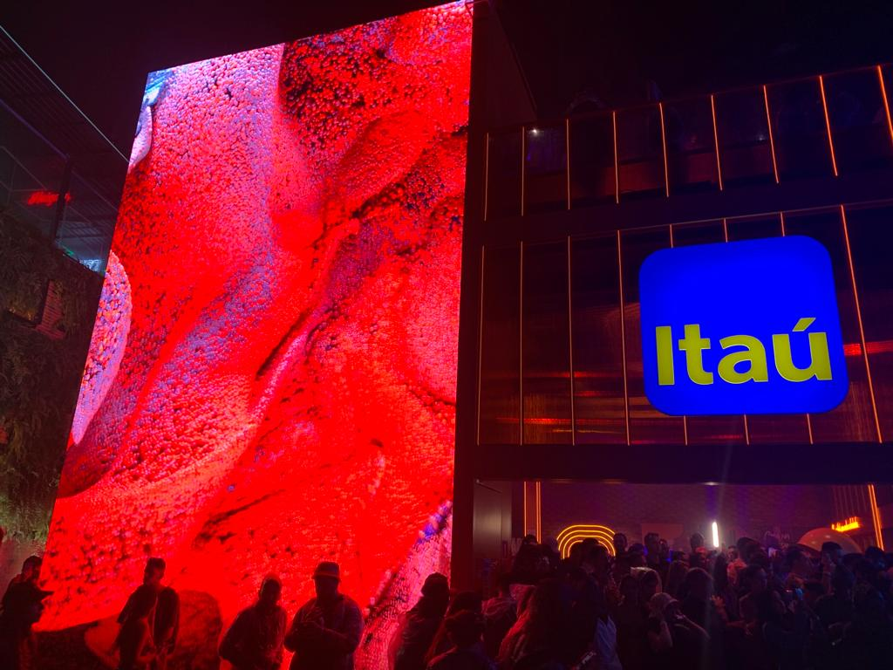
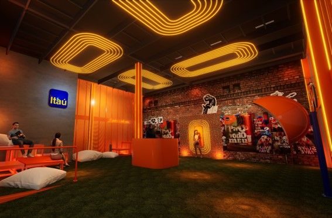
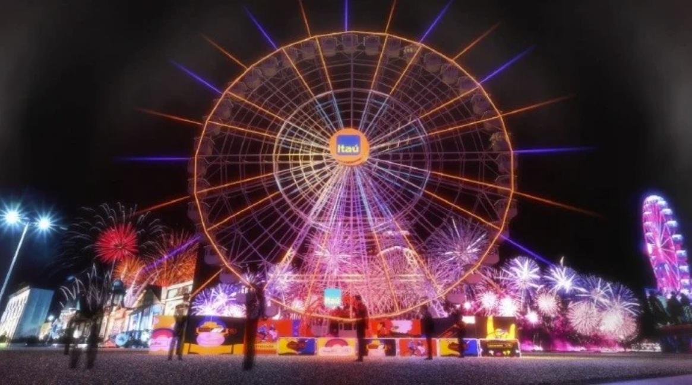

Patrocínio
Leitura estratégica da presença da marca em ambiente de música e entretenimento.
site premium • portfólio • apresentação
Um case visual e analítico sobre como patrocínio, benefícios, presença espacial e experiência de marca podem operar juntos em um grande festival.
Leitura estratégica da presença da marca em ambiente de música e entretenimento.
Conexão entre benefícios, ativação física, recompensa e construção simbólica.
Estrutura pronta para apresentação, GitHub Pages e adaptação para pesquisa acadêmica.
visão geral
Sob a ótica de Brand Experience, o Itaú pode ser analisado como uma marca que transforma presença institucional em experiência percebida. Em vez de apenas exibir logotipos, o banco tende a conectar serviço, acesso, conveniência e reconhecimento do cliente ao território cultural do festival.
Esse movimento fortalece atributos de modernidade, proximidade, utilidade e participação em momentos relevantes da vida do público.
frentes de atuação
Exclusividade percebida e antecipação como forma de relacionamento.
Parcelamento, cashback e vantagem funcional conectados à jornada do evento.
Ocupação espacial da marca dentro do festival com potencial sensorial e interativo.
Associação do banco com cultura, música, conveniência e momentos especiais.
análise crítica
A marca oferece valor concreto ao usuário por meio de acesso, vantagens e facilidades de consumo no evento.
Ao entrar no universo da música e do festival, a marca se associa a afetos, sociabilidade e memória.
Ativações e estande ampliam a presença física da marca e reforçam experiência imersiva e visibilidade.
O vínculo bancário passa a ser percebido também como vantagem cultural e não apenas transacional.
“Em Brand Experience, a força do case está em mostrar como a marca entra na jornada do público e não apenas no campo visual do evento.”
galeria




estrutura acadêmica
Este projeto analisa a participação do Itaú no The Town 2025 sob a ótica de Brand Experience, observando como o patrocínio cultural, os benefícios ao cliente e a presença de marca no evento contribuem para a construção de valor simbólico e experiencial.
Compreender como a marca articula branding, experiência e relação com o público em um grande festival.